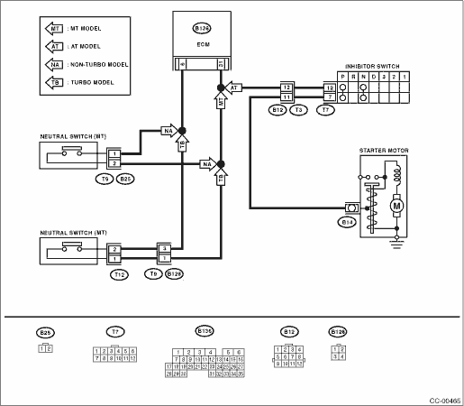

CRUISE CONTROL SYSTEM (DIAGNOSTICS) > Diagnostic Procedure with Diagnostic Trouble Code (DTC)
Detected when the select lever is shifted to the neutral position, or malfunction related to the neutral position switch occurs.
TROUBLE SYMPTOM:
Cruise control cannot be set.
WIRING DIAGRAM:
• 2.0 L model
• 2.5 L model


1.CHECK VEHICLE FOR SPECIFICATION.
Check the vehicle specification.
|
Is the transmission type AT?
|
|
|
2.CHECK NEUTRAL POSITION SWITCH.
1) Connect the Subaru Select Monitor to the data link connector.
2) Turn the ignition switch and Subaru Select Monitor switch to ON.
3) Select {Engine Control System} from the main menu.
4) Then, select {Current Data Display & Save}.
5) Check the neutral position switch signal by shifting the select lever to “P” or “N” range.
|
Is Subaru Select Monitor ON when select lever is shifted into “P” or “N” range? Is Subaru Select Monitor OFF when select lever is shifted to a range other than the “P” or “N” range?
|
|
|
3.CHECK INHIBITOR SWITCH CIRCUIT.
1) Turn the ignition switch to OFF.
2) Disconnect the inhibitor switch harness connector.
3) Turn the ignition switch to ON.
4) Measure the voltage between harness connector terminal and chassis ground.
Connector & terminal
(T7) No. 12 (+) — Chassis ground (−):
|
Is the voltage approx. 5 V?
|
|
Check for open or short in the harness between inhibitor switch and ECM.
|
4.CHECK INHIBITOR SWITCH CIRCUIT.
1) Turn the ignition switch to OFF.
2) Disconnect the starter motor harness connector.
3) Measure the resistance between inhibitor switch harness connector terminal and chassis ground.
Connector & terminal
(T7) No. 7 — Chassis ground:
|
Is the resistance less than 10 Ω?
|
|
|
5.CHECK INHIBITOR SWITCH.
Remove and check the inhibitor switch. 
|
Is the inhibitor switch normal?
|
|
Replace the inhibitor switch.
|
6.CHECK NEUTRAL POSITION SWITCH CIRCUIT.
1) Turn the ignition switch to OFF.
2) Disconnect the neutral position switch harness connector.
3) Turn the ignition switch to ON.
4) Measure the voltage between harness connector terminal and chassis ground.
Connector & terminal
2.0 L LHD model, 2.5 L non-turbo model:
(B25) No. 2 (+) — Chassis ground (−):
2.0 L RHD model:
(B25) No. 1 (+) — Chassis ground (−):
2.5 L turbo model:
(B128) No. 1 (+) — Chassis ground (−):
|
Is the voltage approx. 5 V?
|
|
Check for open or short in the harness between neutral position switch and ECM.
|
7.CHECK NEUTRAL POSITION SWITCH CIRCUIT.
1) Turn the ignition switch to OFF.
2) Measure resistance between harness connector terminal of neutral position switch and chassis ground.
Connector & terminal
2.0 L LHD model, 2.5 L non-turbo model:
(B25) No. 1 — Chassis ground:
2.0 L RHD model:
(B25) No. 2 — Chassis ground:
2.5 L turbo model:
(B128) No. 3 — Chassis ground:
|
Is the resistance less than 10 Ω?
|
|
|
8.CHECK NEUTRAL POSITION SWITCH.
Remove and check the neutral position switch.
|
Is the neutral position switch normal?
|
|
Replace the neutral position switch.
|